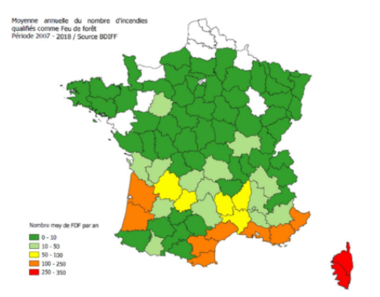

Objectif du projet
Créer un rapport clair et structuré sur les données liées aux feux de forêt afin de comprendre les facteurs qui peuvent influencer leur apparition et leur intensité.
Contexte
Le projet a été réalisé en groupe. Il visait à apprendre à organiser des données, identifier les biais possibles et communiquer les résultats de manière compréhensible pour un public professionnel.
Méthodologie
Exploration des données
Analyse des variables disponibles afin d’identifier les informations pertinentes : température, périodes de départ de feu, fréquence des incendies et conditions observées.
Création d’un questionnaire
Mise en place d’un questionnaire pour comprendre l’importance d’une formulation précise et nuancée dans la collecte et la communication des informations.
Visualisation avec RStudio
Création de tableaux et graphiques clairs afin de représenter les mois les plus à risque, les températures observées et les relations entre différentes variables.
Interprétation des résultats
Analyse des tendances observées pour proposer une lecture utile des données et aider à mieux comprendre les facteurs liés aux feux de forêt.
Outils utilisés
Compétences développées
Résultat obtenu

Le projet a permis de produire une analyse plus claire des feux de forêt et de mettre en évidence l’importance des synthèses graphiques et numériques.
Il met également en évidence l’intérêt d’étudier les relations entre variables afin d’identifier des tendances utiles à la prévention et à la compréhension des risques.